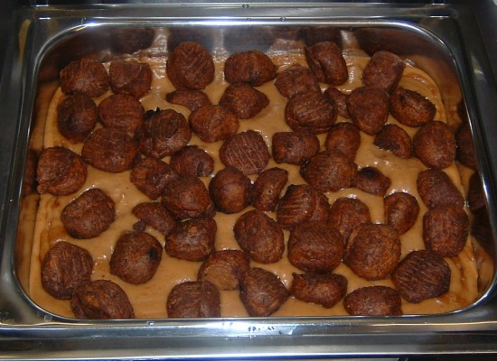
Buffet standaard
9,95 per persoon, vanaf 10 personen
- Huzarenschotel opgemaakt met verse groente en fruit
- Zalmsalade
- Satéstokjes
- Gehaktballetjes in saus
- Vers afgebakken stokbrood
- Eigengemaakte kruidenboter
Hoofdstraat 196, Hillegom
Wie van echt lekker snacken houdt, is bij Cafetaria Turbo aan het juiste adres. We schrappen, schillen en snijden onze friet zelf en bakken in verse plantaardige olie. Afhalen, aanschuiven in ons satécafé of een buffet aan huis.
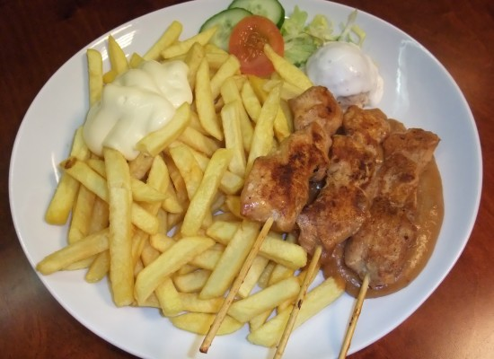
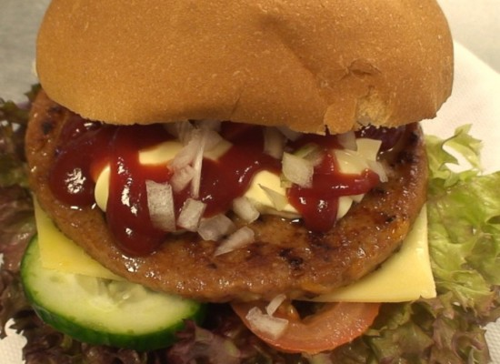
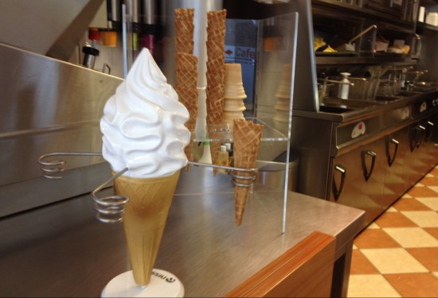
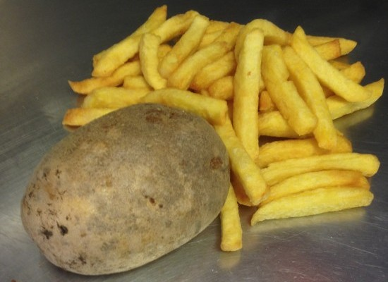
Onze frieten komen als aardappels binnen en worden door ons zelf geschrapt, gepit, gesneden en voorgebakken. Daarmee zijn we de enige in Hillegom met verse friet.
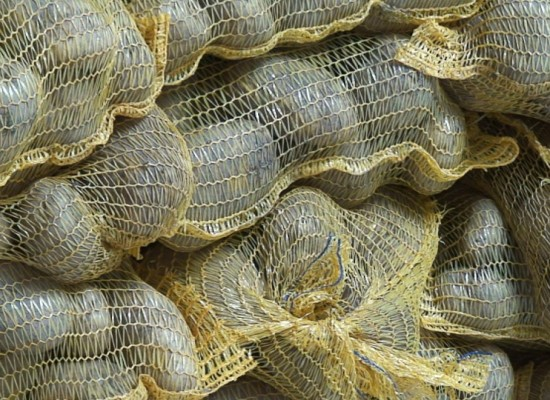
Alles begint bij hele aardappels.
We schrappen, schillen en snijden zelf, elke dag weer.
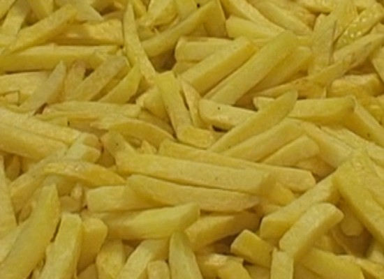
Kies voor vers of ras patat. Daar krijgt u geen spijt van.
Glutenvrije kroketten, frikandellen, mexicano's, kipnuggets, kaassoufflés en saté. Gebakken in een aparte glutenvrije oven, met apart gereedschap.
Familiezak frites met snacks naar keuze: dat levert al snel 20% korting op. Alleen bij afhalen.
Bestel via onze eigen bestelapp, te vinden in de App Store en Google Play. Van maandag tot en met donderdag krijgt u 10% korting. Liever bellen? 0252 524540.
Cafetaria Turbo is er voor iedereen. Naast ons uitgebreide assortiment hebben we glutenvrije en biologische producten, zoals een kroket zonder geur-, kleur- en smaakstoffen.
Ingang in de poort naast de cafetaria
Hier kunt u aan tafel genieten van lekkere kip- of varkenshaassaté. Ook een biefstuk of schnitzel behoort tot de mogelijkheden. Natuurlijk geserveerd met heerlijke, zelfgemaakte verse frietjes en garnituur. Heeft u suggesties? Vertel het ons!
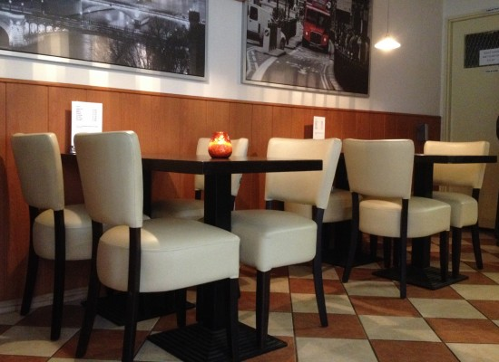
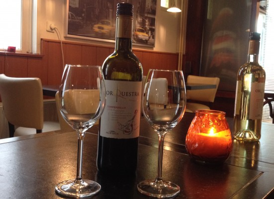
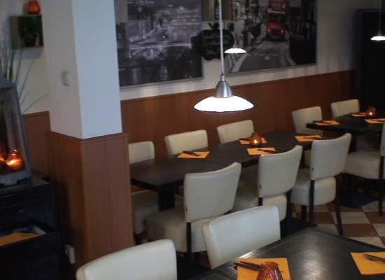
Wij zorgen voor een smakelijk buffet, zodat u alle tijd heeft voor uw gasten. Alles wordt netjes bij u thuis afgeleverd en we passen het buffet helemaal aan uw wensen aan. Ook een uitgebreid bittergarnituur behoort tot de mogelijkheden.

9,95 per persoon, vanaf 10 personen
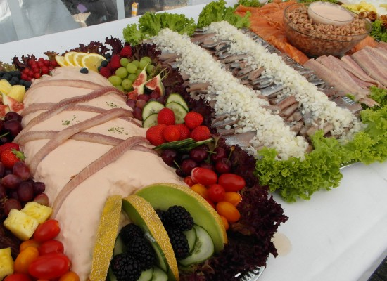
13,95 per persoon, vanaf 10 personen
De salades zijn rijkelijk opgemaakt met vers fruit (meloen, aardbei, kiwi, druiven) en diverse groenten (komkommer, wortelsalade, zilveruien en bij de huzarensalade ook eieren).
Met verse salade en verse frietjes
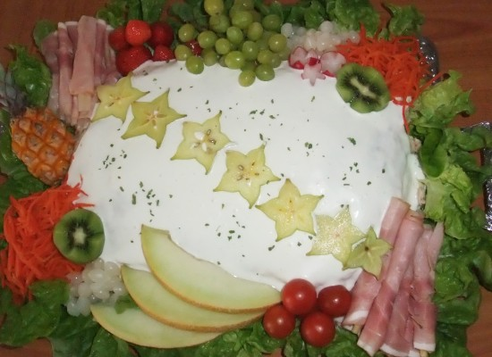
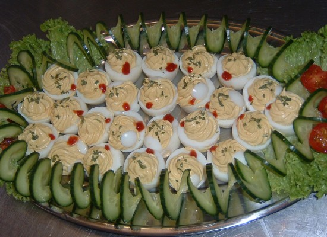
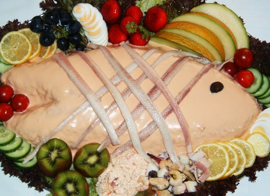
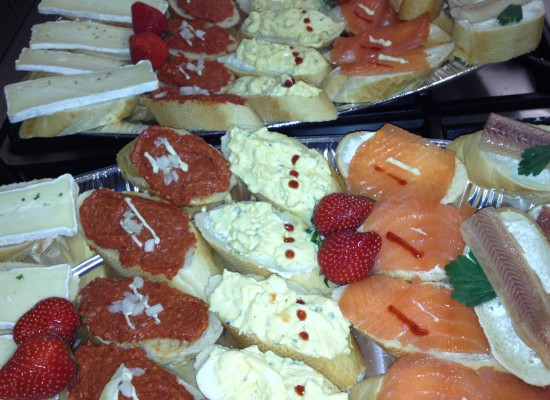
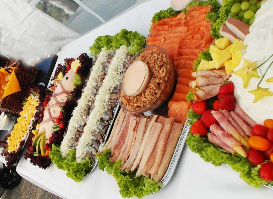
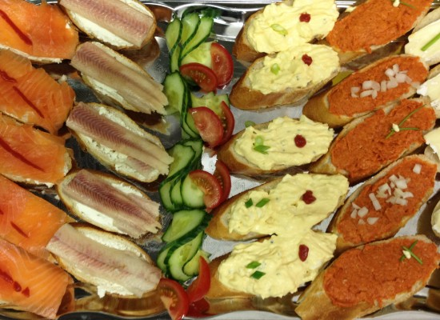
Heeft u andere wensen of ideeën? Laat het ons weten, wij zijn u graag van dienst.
Lijkt het je wat om bij Turbo te werken? Kom eens langs als je interesse hebt.
| Maandag | 12.00 tot 20.00 |
|---|---|
| Dinsdag | 12.00 tot 20.00 |
| Woensdag | 12.00 tot 21.00 |
| Donderdag | 12.00 tot 21.00 |
| Vrijdag | 12.00 tot 21.00 |
| Zaterdag | 12.00 tot 21.00 |
| Zondag | 12.00 tot 21.00 |
De keuken is open tot 20.00 uur.
Cafetaria Turbo